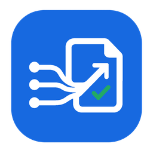
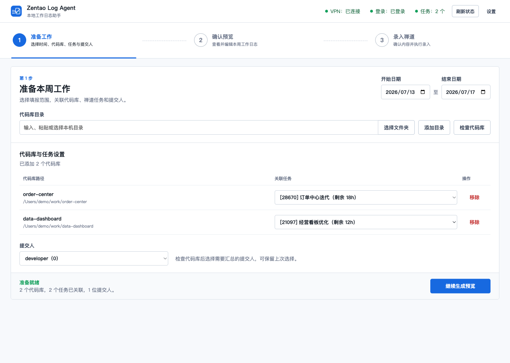
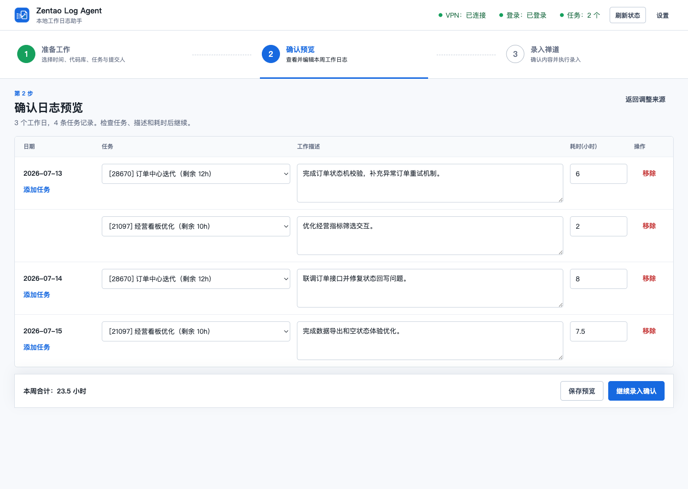
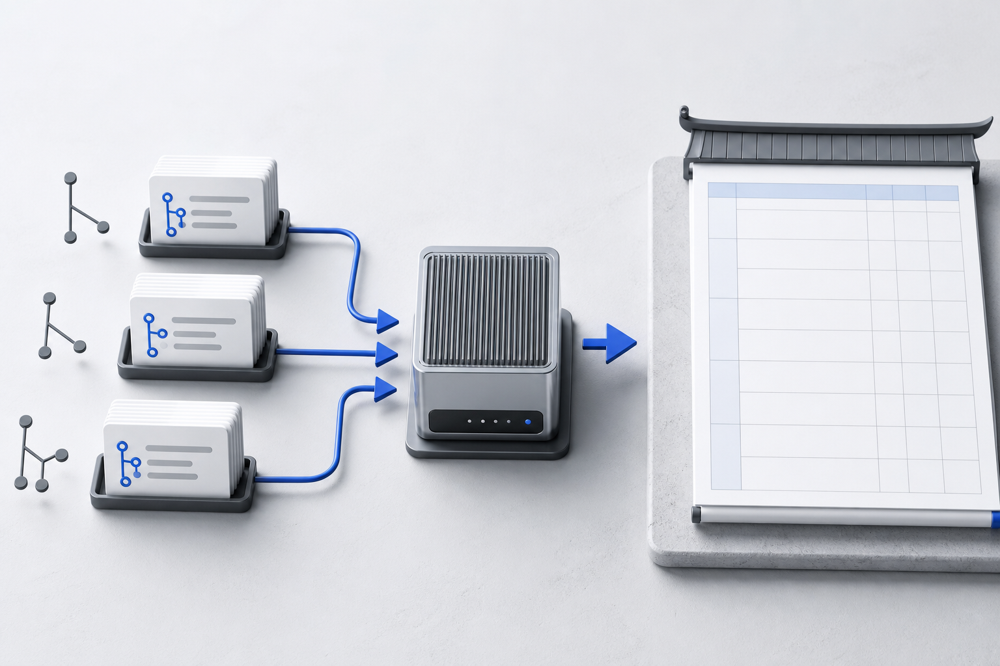

01
自动检测提交，生成工作总结
自动识别 Git、HG 或 SVN，按日期和提交人读取记录，再生成简洁的中文工作描述。
GitMercurialSubversion

Zentao Log Agent
少做重复录入
从代码库读取真实工作轨迹，用 LLM 整理成中文日志，再通过禅道 HTTP 接口直接录入。整个流程都在一个本地客户端内完成。
01
自动识别 Git、HG 或 SVN，按日期和提交人读取记录，再生成简洁的中文工作描述。
02
自动完成状态检测、登录和任务获取。确认预览后，通过 HTTP 接口直接录入禅道。
03
源代码公开可审查。账号、Key、代码库和任务配置只保存在当前用户的本地 JSON。
04
代码库保留任务关联和提交人；同一日期可添加多条任务，工作描述与耗时都能在提交前调整。
05
录入时根据任务初始预计、累计消耗和本次耗时计算预计剩余。
提交前看清每一条
日期、任务、工作描述和耗时都能直接编辑。任务剩余时间同时展示，工作拆分更直观。


三步完成一周日志
在自己的电脑上运行
macOS 支持 Apple Silicon 与 Intel，Windows 提供安装版。首次运行后，配置会自动保存在当前用户目录。
需要 ZIP 或 Windows 便携版？前往 v1.0.2 完整发布页。